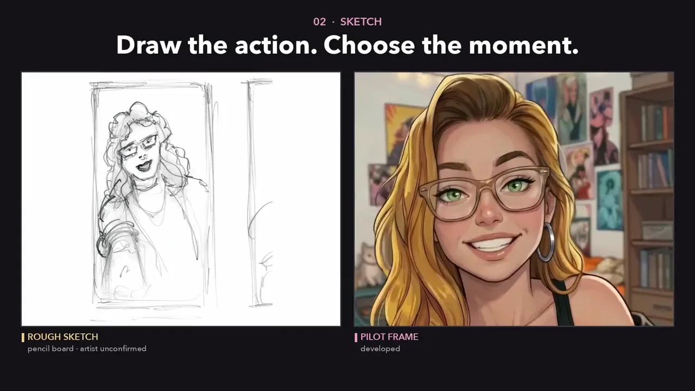

Film & animation pipelines

Clarissa · Working Title Animation · 10 sec
Build a scene from a script and sketches. We develop characters, direct performances and carry the visual language through the finished sequence.
Explore animation & film ↗